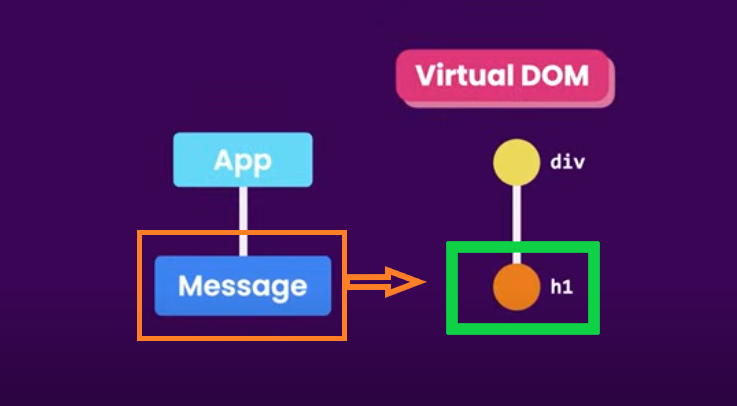
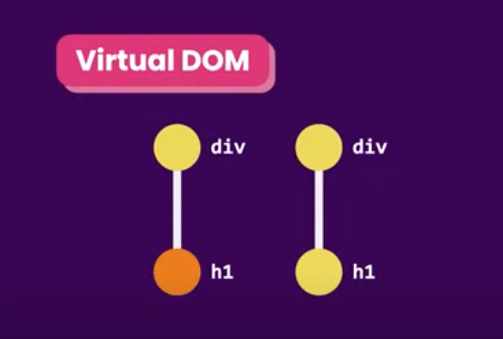
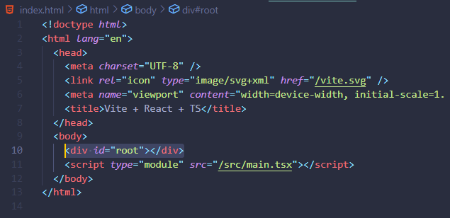
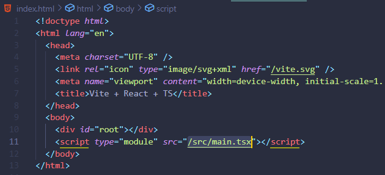
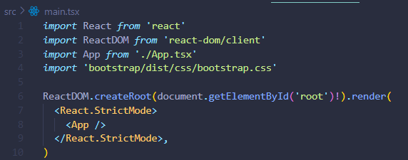

HOME
How React Works
Our componet tree
Currently we have a componant tree like this, where the 'App' is the
root and 'Message' is the child.
When we start our app...
React takes our component tree, and builds a Javascript
data-structure, which is refered to as 'The Virtual DOM'
The Virtual DOM
This virtual dom is different than the actual DOM in the browser.
Virtual dom is a lightweight, in memory representation of our
component tree, where each node represents a component and its
propertys.
Updating the DOM
When the state, or the data of a component changes, react updates the
corresponding node in the Virtual DOM to reflect the current state.

Then, it compares the current version of virtual dom with the previous
version to identify which nodes should be updated.
It will then update those nodes in the actual DOM.

React DOM
Technically, updating the DOM isn't done by react itself, but instead
by a companion library called 'react-dom'.
Earlier we saw in the 'package.json' file that we are dependant on 2
libraries, 'react' and 'react-dom'.
How 'react' & 'react-dom' work together
In 'index.html' we've got the 'root div' and the script that runs
'main.tsx'


In 'main.tsx' you can see that react dom is taking our root div and
rendering there inside, our App component.

The React.StrictMode component is just a built in react error catching
feature. It doesn't have a visual representation.
We used ReactDOM to do this, but there is another library called
ReactNative that will allow our app to render in a mobile app.
So, React itself isn't tied to a particular platform, and we can you
it to build apps for web, mobile, and desktop devices.